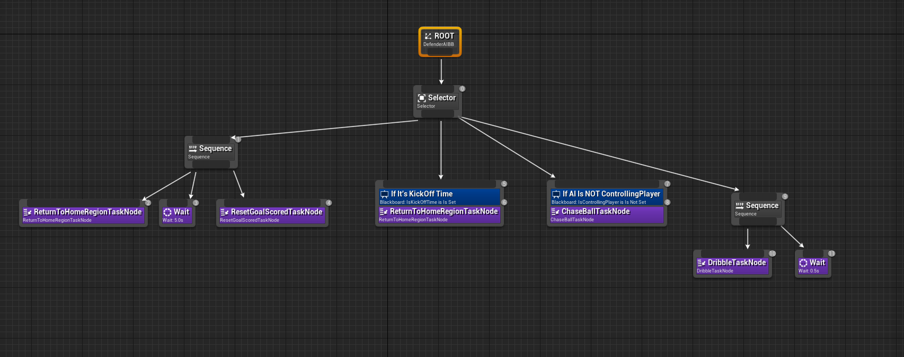

#include "AICharacter.h"
// Sets default values
AAICharacter::AAICharacter() {
// Set this character to call Tick() every frame. You can turn this off to improve performance if you don't need it.
PrimaryActorTick.bCanEverTick = true;
// Sets up trigger component
TriggerComponent = CreateDefaultSubobject<USphereComponent>(TEXT("TriggerComponent"));
TriggerComponent->AttachToComponent(RootComponent, FAttachmentTransformRules::KeepRelativeTransform);
// Sets up material components
RedTeamMaterial = CreateDefaultSubobject<UMaterial>(TEXT("RedTeamMaterial"));
BlueTeamMaterial = CreateDefaultSubobject<UMaterial>(TEXT("BlueTeamMaterial"));
}
// Called every frame
void AAICharacter::Tick(float DeltaTime) {
Super::Tick(DeltaTime);
heading = GetActorForwardVector();
}
// Called to bind functionality to input
void AAICharacter::SetupPlayerInputComponent(UInputComponent* PlayerInputComponent) {
Super::SetupPlayerInputComponent(PlayerInputComponent);
}
// Called when the game starts or when spawned
void AAICharacter::BeginPlay() {
Super::BeginPlay();
TriggerComponent->OnComponentBeginOverlap.AddDynamic(this, &AAICharacter::OnOverlapBegin);
}
// Returns if this character is the closest teammate to the ball
bool AAICharacter::isClosestTeamMemberToBall()
{
if (team)
{
return team->playerClosestToBall == this;
}
else
{
GEngine->AddOnScreenDebugMessage(-1, 15.0f, FColor::Red, TEXT("TEAM IS NULL IN AICHARACTER"));
return false;
}
}
// Returns if this character is controlling the ball
bool AAICharacter::isControllingPlayer()
{
if (team && IsDribble)
{
GEngine->AddOnScreenDebugMessage(-1, 5.f, FColor::Orange, FString::Printf(TEXT("Controlling Player has been set")));
return team->controllingPlayer == this;
}
else
{
//GEngine->AddOnScreenDebugMessage(-1, 15.0f, FColor::Red, TEXT("TEAM IS NULL IN AICHARACTER or IsDribble IS NOT TRUE"));
return false;
}
}
// Called when defender overlaps with another actor
void AAICharacter::OnOverlapBegin(class UPrimitiveComponent* OverlappedComp, class AActor* OtherActor, class UPrimitiveComponent* OtherComp, int32 OtherBodyIndex, bool bFromSweep, const FHitResult& SweepResult) {
// Casts the other actor to soccer ball
ASoccerBall* CollisionSoccerBall = Cast<ASoccerBall>(OtherActor);
// Checks if collided with soccer ball and not currently dribbling
if (CollisionSoccerBall && !IsDribble) {
// Sets the soccer ball pointer for player
SoccerBall = CollisionSoccerBall;
// Handles soccer ball dribbling
Dribble();
//TEST
GEngine->AddOnScreenDebugMessage(-1, 15.0f, FColor::Red, TEXT("IMMA DRIBBLE"));
}
}
// Called for player kick
void AAICharacter::Kick() {
// Only kicks the ball if in front of player
if (SoccerBall && IsDribble) {
// Lets go of the soccer ball
(SoccerBall->GetStaticMeshComponent())->SetSimulatePhysics(true);
(SoccerBall->GetStaticMeshComponent())->DetachFromComponent(FDetachmentTransformRules(EDetachmentRule::KeepRelative, false));
// Random vertical vector for lift
float LiftFactor = FMath::FRandRange(1.f, 2.f);
FVector LiftVector = FVector(0, 0, 7500 * LiftFactor);
// Creates vector for kick impulse
FVector KickVector = LiftVector + (GetActorForwardVector() * 20000);
// Applies impulse to soccer ball mesh
(SoccerBall->GetStaticMeshComponent())->AddImpulseAtLocation(KickVector, SoccerBall->GetActorLocation());
// Enables collision for soccer ball
(SoccerBall->GetStaticMeshComponent())->SetCollisionEnabled(ECollisionEnabled::QueryAndPhysics);
// No longer dribbling
IsDribble = false;
}
}
// Called for player pass
void AAICharacter::Pass() {
// Only passes the ball if in front of player
if (SoccerBall && IsDribble) {
// Lets go of the soccer ball
(SoccerBall->GetStaticMeshComponent())->SetSimulatePhysics(true);
(SoccerBall->GetStaticMeshComponent())->DetachFromComponent(FDetachmentTransformRules(EDetachmentRule::KeepRelative, false));
// Creates vector for pass impulse
FVector PassVector = GetActorForwardVector() * 17500;
// Applies impulse to soccer ball mesh
(SoccerBall->GetStaticMeshComponent())->AddImpulseAtLocation(PassVector, SoccerBall->GetActorLocation());
// Enables collision for soccer ball
(SoccerBall->GetStaticMeshComponent())->SetCollisionEnabled(ECollisionEnabled::QueryAndPhysics);
// No longer dribbling
IsDribble = false;
}
}
// Called when the play needs to dribble
void AAICharacter::Dribble() {
// Player is currently dribbling
IsDribble = true;
team->controllingPlayer = this;
// Snaps the soccer ball to the player's socket
(SoccerBall->GetStaticMeshComponent())->SetSimulatePhysics(false);
(SoccerBall->GetStaticMeshComponent())->SetCollisionEnabled(ECollisionEnabled::PhysicsOnly);
(SoccerBall->GetStaticMeshComponent())->AttachToComponent(GetMesh(), FAttachmentTransformRules(EAttachmentRule::SnapToTarget, true), TEXT("soccerBallSocket"));
}
FVector AAICharacter::Seek(FVector targetPos)
{
FVector desiredVelocity = (targetPos - GetActorLocation() * 10.0f);
desiredVelocity.Normalize();
return desiredVelocity - GetVelocity();
}
// Setter for the home region
void AAICharacter::SetHomeRegion(ARegions* NewHomeRegion) {
HomeRegion = NewHomeRegion;
}Soccer Simulation - Unreal Engine 4/C++
Gameplay
Overview
- A 5 vs 5 soccer game developed using Unreal Engine 4
- Designed and implemented an AI class for the players on the pitch
- Implemented behaviors such as dribbling, chasing the ball, and returning to home positions in C++
- Used behavior trees to execute certain tasks based on conditions on the soccer pitch
Code Snippets
#include "SoccerPitch.h"
#include "DefenderAIController.h"
#include "AICharacter.h"
#include "ChaseBallTaskNode.h"
EBTNodeResult::Type UChaseBallTaskNode::ExecuteTask(UBehaviorTreeComponent& OwnerComponent, uint8* NodeMemory) {
// Getting the AI controller
ADefenderAIController* AIController = Cast<ADefenderAIController>(OwnerComponent.GetAIOwner());
if (AIController) {
// Getting the soccer pitch and the AI character
ASoccerPitch* SoccerPitch = AIController->GetSoccerPitch();
AAICharacter* DefenderAI = AIController->GetAICharacter();
if (SoccerPitch && DefenderAI) {
// Check if this AI is the closest Team Member to the Ball, if it is, pursue the ball
if (DefenderAI->isClosestTeamMemberToBall())
{
AIController->MoveToLocation(DefenderAI->team->pitch->ball->GetActorLocation());
//GEngine->AddOnScreenDebugMessage(-1, 5.f, FColor::Orange, FString::Printf(TEXT("Closest Player is: %d"), DefenderAI->playerID));
}
}
// The task succeeded
return EBTNodeResult::Failed;
}
// The task failed
return EBTNodeResult::Succeeded;
}
